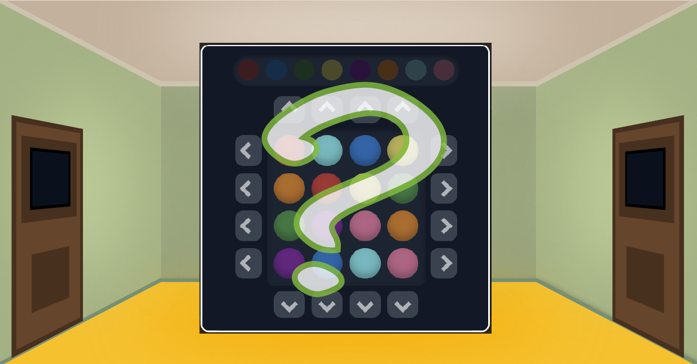

パズルを解いて部屋を開けていきましょう！全２６問！
出てくるパズルは、ルールやクリア条件の説明がなく、画面の要素がどんなルールで変化するのか、あれこれ試して挙動を観察することで推察して、用意されたクリア条件の達成を目指すことを楽しむ謎・パズルです。
数や算数を扱う問題は一部ありますが、それ以外は、特定の分野の知識や言語の知識が必要な問題はありません。数字や記号の表示の意味さえわかれば、他言語圏の人でも、宇宙人でも解けます。また、操作はタップのみの親切設計です。見えないものをタップするなどのアンフェアな仕掛けもありません。安心してお取り組みください。